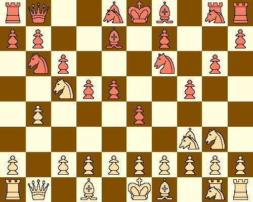
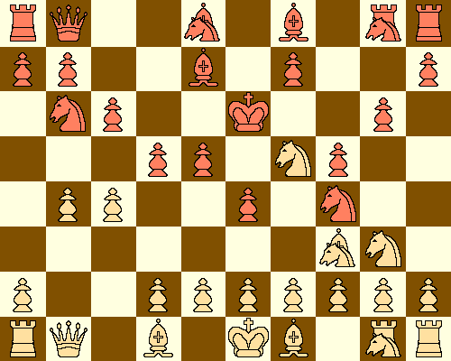
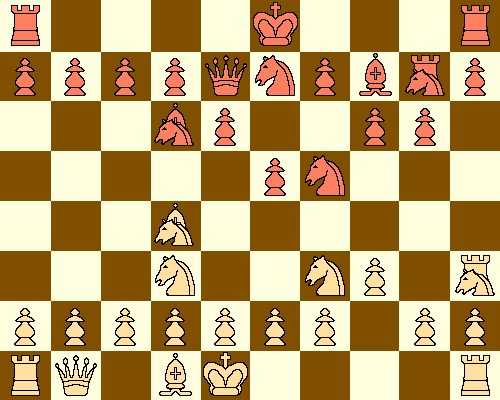

This is especially true in highly tactical chess variants. In the following game of Schoolbook chess, Zillions had the white pieces and ChessV had the black pieces, with both sides playing fives seconds a move:
1. Af3 f5 2. Nd3 Ng6 3. Ng3 f4 4. Nh5 c6 5. Ag5
Here we see that Zillions prefers to bring pieces out before pawns, and that Zillions has no qualms with moving the same piece twice in the opening. Indeed, ChessV almost always defeats Zillions when both sides have the same amount of time to think.
5. ... h6 6. Af3 I6 7. NI3 e5 8. Nc5 Be7 9. b4
Zillions finally advances a pawn.
9. ... d6 10.Ne4 Nh4 11.Ag4 h5 12.AI5 Ng6 13.Ah3 d5 14.Nc5 Nb6

White now forces Black to move his king.
15. Ne6 Kf7 16. Ng5 Kf6 17. c4 Nh4

In 17 moves, white has only moved three pieces and two pawns. Despite this, he has won the game. White can now move and force mate; finding this mate is left as an exercise for the reader.
Now that I have shown you a game where Zillions wins against ChessV, I will now show you an example of the much more common case of ChessV winning against Zillions. In this game, Zillions was again white and ChessV was black. Both sides were given 60 seconds to think their move:
1. Af3 Nd6 2. Ng3 f5 3. Nd3 Nhf7 4. h3 e6 5. BI3 h6 6. Ah5 Bh7 7. Ke1?
Zillions, for mysterious reasons, made a meaningless king move.
7. ... I6 8. Af3 MI7 9. Bxd8 Qxd8 10. Nc5 Ng5 11. Ae5 Ndf7 12. Ad4 Ad6 13. Mj3 Qe7
ChessV now has Zillions on the run. With a better pawn structure and two more pieces developed, black has more than equalized and now controls the game.
14. Nd3

At this point, Black can force the win of a piece. The moves to do so are left as an exercise for the reader.